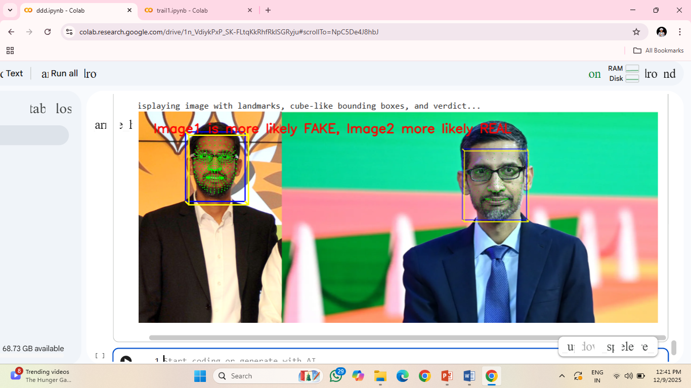

×
This project was a great experience since it had a live demonstration of 3D models rendering on
the given space.
I worked by using Kotlin, as a base language, followed by
In this work I have demonstrated detecting AI generated Fake images. using a simple Multi
Modal
features algorithm
which includes facial landmarks extractions,followed by frequency analysis i.e fast fourier
trasnform.
through which I gained a accuracy of 93.4%. this algorithm basically is designed without the
involvement of complex CNN models.
so that any commom human can easily try to analyse whether the image they see is Real/Fake.
we also tested using our real face, and manipulated face.

PROJECTS
1 - Deepfake Detection
This project was a great experience since it had a live demonstration of 3D models rendering on
the given space.
I worked by using Kotlin, as a base language, followed by
- ARCore
- SceneView
- compose navigation
Enabled real time 3D rendering of educational models (alphabets, anatomy) on the detected
planes, enhancing user
visualization.
2 - AR the Learning Companion
In this work I have demonstrated detecting AI generated Fake images. using a simple Multi
Modal
features algorithm
which includes facial landmarks extractions,followed by frequency analysis i.e fast fourier
trasnform.
through which I gained a accuracy of 93.4%. this algorithm basically is designed without the
involvement of complex CNN models.
so that any commom human can easily try to analyse whether the image they see is Real/Fake.
we also tested using our real face, and manipulated face.
- open CV
- Python
- Face Mesh
- Keras
- kaggle token for dataset

Solar Solutions Initiative
Managing a venture for solar panel installations in residential and educational sectors. Responsible for technical layouts and operational strategy.